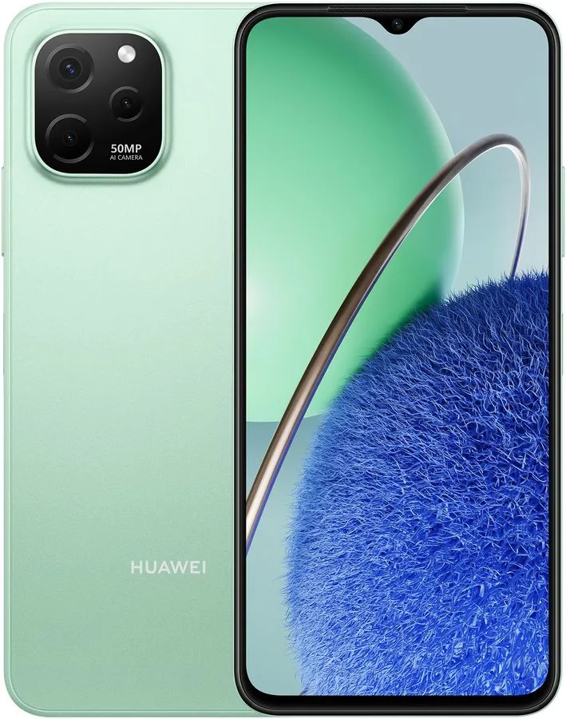

Смартфон Huawei nova Y61 4/64Gb, зеленый

Описание продукта:
Смартфон Huawei nova Y61 в эргономичном корпусе с безрамочным дисплеем — устройство с высокой производительностью и мощной батареей.
Особенности
Дисплей диагональю 6,52 дюйма воспроизводит четкое и яркое LCD изображение в разрешении 1600x720 пикселей. Плавная трансляция динамичных сцен без рывков и задержек благодаря частоте обновления в 60 Гц. Высокая производительность при выполнении разных задач благодаря 8-ядерному процессору и 4 Гб оперативной памяти. Гибридный слот для установки двух карт nanoSIM. Беспроводные технологии для сопряжения с разными устройствами представлены модулями Bluetooth 5.1 и Wi-Fi. NFC для быстрой оплаты покупок с помощью смартфона. Системы навигации помогут проложить правильный маршрут и сориентироваться на местности. Размещенный сбоку сканер отпечатка пальца обеспечивает безопасный доступ к гаджету. Надежный аккумулятор
Батарея емкостью 5000 мАч — для выполнения разных задач на протяжении дня. Быстрая зарядка 52 Вт в сочетании с 20 уровнями защиты аккумулятора — для быстрого восстановления его ресурса.
Возможности фотосъемки
Основная камера 50 МП с диафрагмой F1.8 позволяет получать детализированные и яркие HD-изображения.
При недостаточном освещении съемка осуществляется в ночном режиме, а ИИ автоматически улучшает качество получившихся кадров.
Четкое фотографирование движущихся объектов возможно благодаря функции мгновенной съемки с авторегулировкой скорости затвора.
Достойная производительность
Четкость отображения динамичных сцен в сочетании с высокой скоростью отклика обеспечивают достойную результативность во время игр.